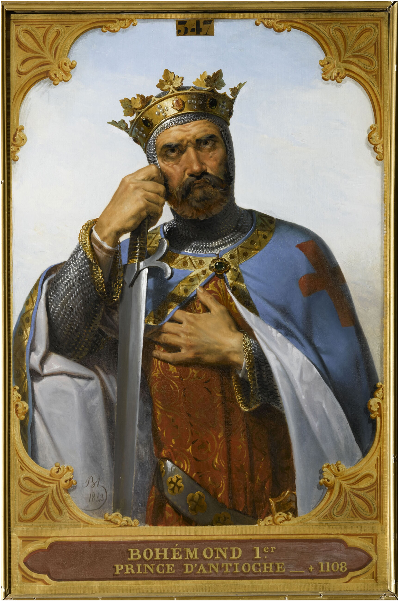

LIVE · TRANSMISSION
ANNO DOMINI MMXXVI
MAXIMAULISM
“Life is sweetest near the bone”

RHETORIC
EROS
✝ THE HOUR IS LATE ✝ RHETORIC = ESSAYS ✝ EROS = POEMS ✝ LIFE IS SWEETEST NEAR THE BONE ✝ ✝ THE HOUR IS LATE ✝ RHETORIC = ESSAYS ✝ EROS = POEMS ✝ LIFE IS SWEETEST NEAR THE BONE ✝